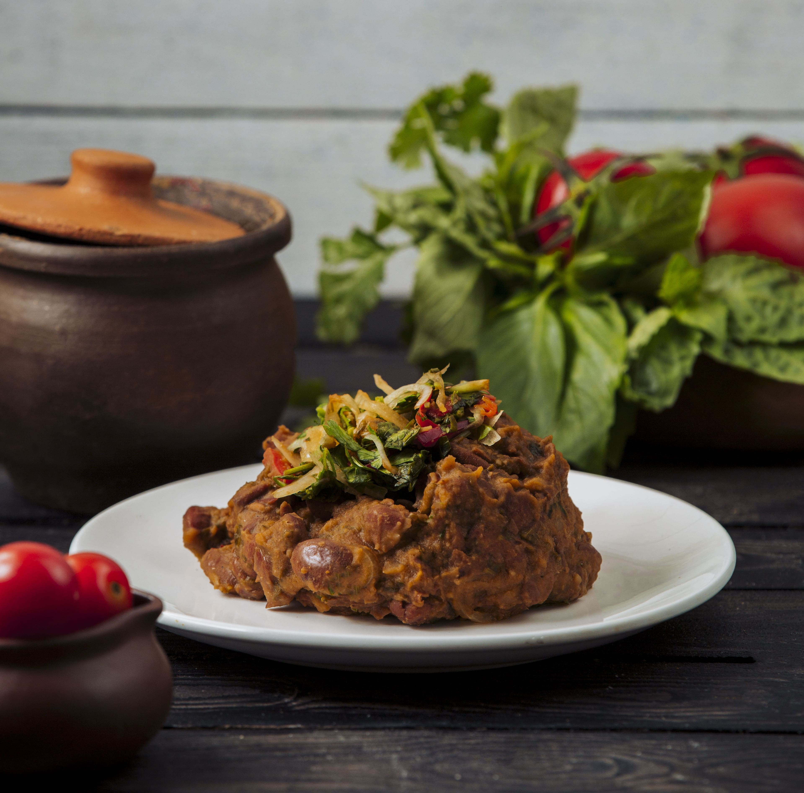
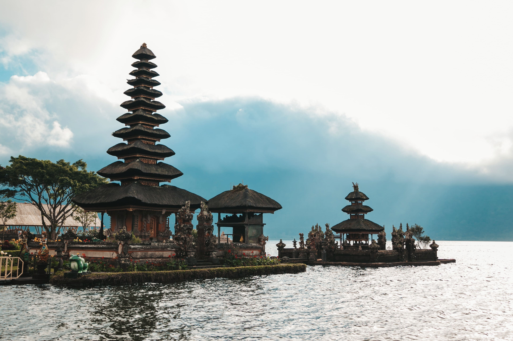
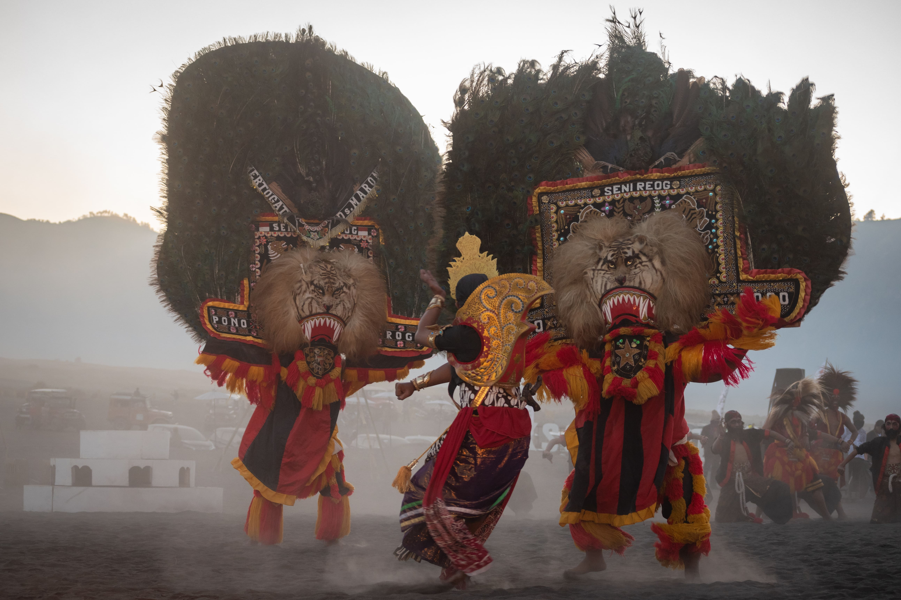

Indonesia
Indonesia is a country in Southeast Asia and Oceania, between the Indian and Pacific oceans. It consists of more than seventeen thousand islands, including Sumatra, Java, Borneo, Sulawesi, and New Guinea. Indonesia is the world's largest island country and the 14th-largest country by land area, at 1,904,569 square kilometers (735,358 square miles). With over 267 million people, it is the world's 4th-most-populous country as well as the most-populous Muslim-majority country. Java, the world's most populous island, is home to more than half of the country's population.


